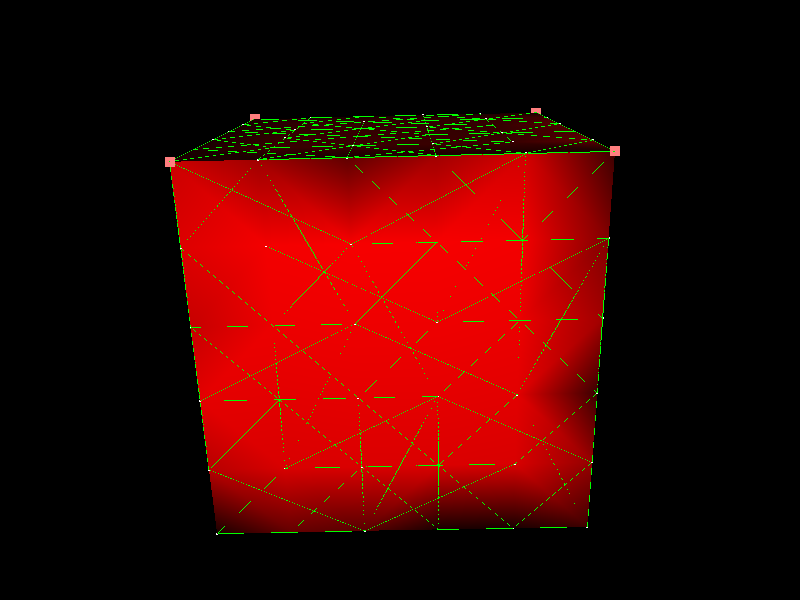
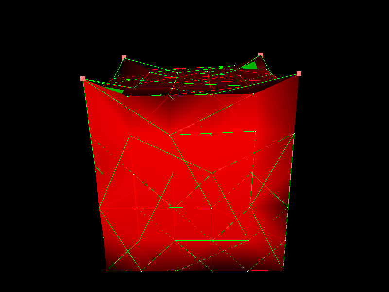

Topological Mapping (7/7)

Description
This final step is a second pipeline of topological mappings from an hexahedral mesh to a triangular one, going throw quads.
Key points
- Dynamic topological components to store the quad mesh.
- Hexa2QuadTopologicalMapping component is used to map Quads on the border of the hexahedral mesh to this container.
- Dynamic topological components to store the triangular mesh.
- Quad2TriangleTopologicalMapping component is used to map Quads to Triangles.
- Springs are added to the edges on surface of the mesh using TriangularBendingSprings.
- Finally, OglModel can be used to visualise the surface mesh.
Results
This last step shows another example of topological mappings with a mechanical behaviour similar to step
"Change mesh behaviour".
